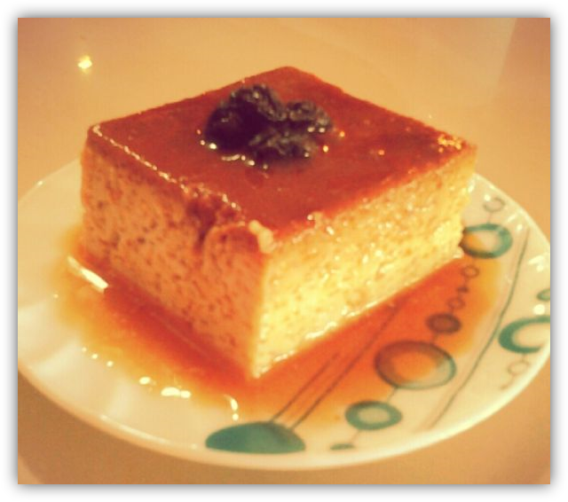

POSTRES
Quesillo

Espectativa
Ingredientes:
- 1 litro de Leche
- 370 gramos de leche condensada
- 2 tazas de Leche en polvo
- 10 Huevos
- 50 mililitros de Ron
- 25 mililitros de Esencia de vainilla
- ¾ taza de Azúcar (150 gramos)
- Para el caramelo: ½ taza de Azúcar (100 gramos)
Pasos:
- Antes de empezar a preparar el quesillo casero, se debe tener disponible una quesillera o molde para dos litros de mezcla. Luego, se empieza a preparar el caramelo. Para ello, se ha de llevar al fuego el azúcar hasta que se derrita y adquiera un color caramelo. Es muy importante no dejar que se oscurezca demasiado, ya que tiende a ser amargo. Cuando hayamos obtenido el color deseado, con cuidado de no quemarnos extendemos el caramelo por todos los bordes del molde. Yo lo que hago es girarlo con ayuda de un paño y, cuando ya lo tengo todo cubierto, meto el molde en agua fría. Al hacer esto, empieza a agrietarse y es entonces cuando sabremos que está listo.
- Para hacer la mezcla del quesillo al horno, cogemos un bol e incorporamos la leche, la leche condensada, la leche en polvo, los huevos, la vainilla, el ron y el azúcar. Mezclamos con una batidora de mano.
- Luego, llevamos la mezcla por partes a la licuadora para asegurarnos de que no queden grumos y el quesillo al horno quede suave y cremoso. Después, disponemos la mezcla en el molde cubierto por el caramelo que preparamos al principio de la receta.
- Encendemos el horno a temperatura alta para que se caliente. Mientras se calienta, buscamos un molde unos centímetros más ancho que el de la mezcla para poder hornear el quesillo al baño María. cCando tenemos todo listo, llevamos el quesillo al horno durante una hora u hora y media a temperatura media. Sabemos que ya está listo porque al introducir un cuchillo este debe salir limpio.
- Cuando lo retiremos del horno debemos esperar a que se enfríe lo suficiente para llevarlo a la nevera. Cuando esté frío, podemos desmoldar y servir el quesillo con leche condensada al horno para disfrutarlo en familia.
Este es un sitio de recetas rápidas que puedes hacer facilmente para una reunión, sorpresa, algo casual o simplemente para ti.